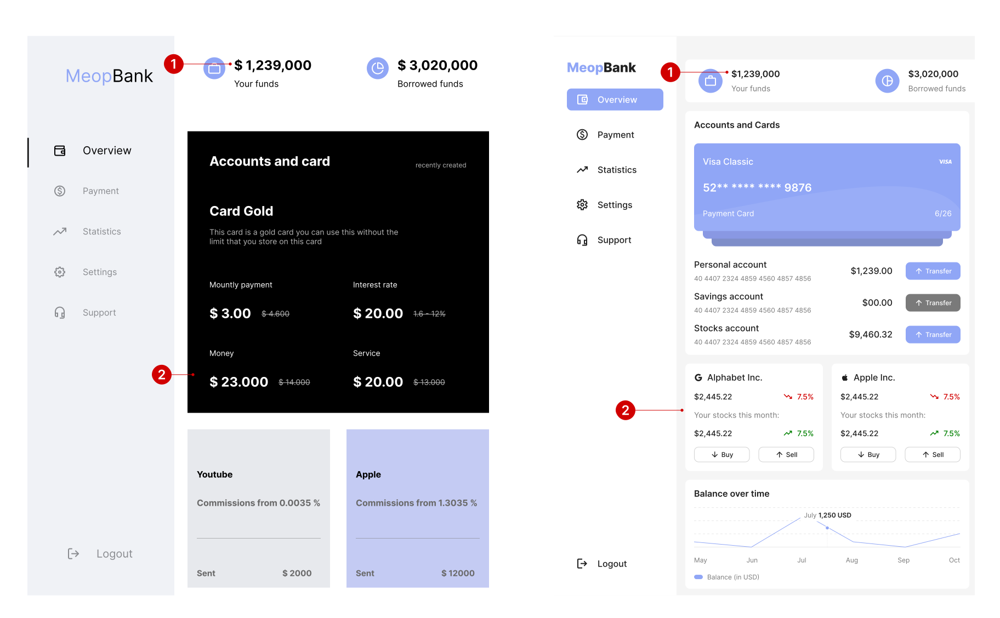
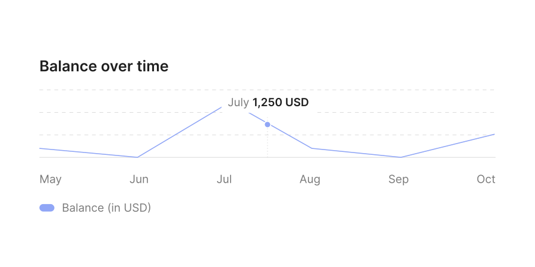

About
I work designing a complete system from 0-1,
from researching and identifying problems to getting feedback from
the CEO to creating and handing them off for implementation. "Food.
My" will help the employees save time and better serve their
customers through this CRM system.
Context
food.my is an internal product management tool which functions as a
Customer Relationship Management (CRM) system for e-commerce. It
provides a platform for internal user management and product
management for businesses. This CRM allows for managing users,
products, and relevant data to enable companies to monitor and
analyze performance efficiently.
The Challenge
food.my is a SaaS company dedicated to helping businesses enhance
their internal operations and stand out in a competitive market.
After conducting comprehensive UX research and testing, we have
identified significant opportunities to improve our internal product
management tool, making it even more helpful to internal users. With
the information gathered from our research, we are poised to develop
enhancements to create an even more elegant and user-friendly user
experience.
Proposed Solution
food.my is a SaaS company dedicated to helping businesses enhance
their internal operations and stand out in a competitive market.
After conducting comprehensive UX research and testing, we have
identified significant opportunities to improve our internal product
management tool, making it even more helpful to internal users. With
the information gathered from our research, we are poised to develop
enhancements to create an even more elegant and user-friendly user
experience.
Design Process
As the experienced designer of this project, I was responsible for
both strategic and visual design aspects.
Colors Used
The Tailwind colour palette is predominantly utilized due to client
specifications mandating it.

Let's make the card layout more useful
To enhance the user experience, consider these improvements for the
element:
- 1. Rename it to something specific and descriptive, like "Account Management" or "Payment Methods," for clarity.
- 2. Relocate the element to a more logical position, such as the main navigation bar or a dedicated account management page, improving accessibility.
- 3. Revamp the design with distinct colors, fonts, and images to make it visually appealing and engaging, ensuring it stands out from the rest of the page.
After making the card layout more useful
These changes have led to a more user-friendly design for the
section, offering several advantages:
- 1. Increased informativeness: The inclusion of card images and additional information helps users understand the section's purpose and what to find there.
- 2. Enhanced visual appeal: A unified color palette and style make the section more attractive and scannable.
- 3. Improved consistency: Consistent content card design facilitates information retrieval and clarifies the section's relationship to the overall dashboard.

Try to emphasize how it may work in real life
These changes have enhanced the section's cohesiveness and
user-friendliness, with several benefits:
- 1. Enhanced consistency and functionality for stock cards.
- 2. Improved usability by populating the cards with user portfolio data and offering quick actions.
- 3. Added a feature for users to customize their dashboard content through the app's settings, enhancing personalization and flexibility.

Take into account the real-world context and functionality of your
design. This helps ensure authentic content and prevents it from
feeling artificial.
Improving minor details
When dealing with numbers in various currencies, it's vital to
respect specific formatting rules, such as no space between the
currency symbol and the value, and using commas and dots correctly.
I've incorporated these details in my redesign.

Improving the next part of the design
Let's move on to the next section of the design. Once again, I
prioritized consistency in the style of content cards and ensured
proper alignment of elements within them.

Removing unnecessary white space
Besides unifying the content card style and aligning the elements, I
also improved the colors and sizes, creating a more user-friendly
experience. By addressing unnecessary white space, I added two extra
elements and a monthly transaction summary, making the section more
informative for potential users.

I got a chance to add more information -
As part of the design, I had ample space, which allowed me to
display more information to the users.

Learning
In design, minor details can enhance the user experience and make
the design more modern and valuable.